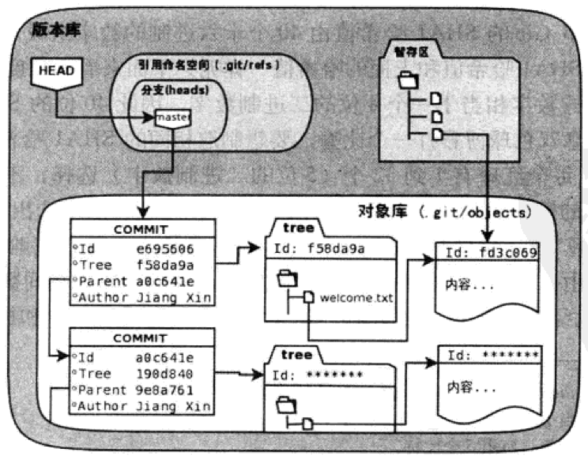

git笔记

- 左侧是工作区，右侧是版本库。版本库中标记为index的区域是暂存区，标记为master的是master分支所代表的目录树。
- 此时HEAD实际是指向master分支的一个“游标”，所以图示的命令中出现HEAD的地方可以用master替换。
- objects标识的区域是Git的对象库，实际位于
.git/objects下。 - 对工作区修改（或新增）的文件执行
git add命令时，暂存区的目录树将被更新，同时工作区修改（或新增）的文件内容会被写入到对象库中的一个新的对象中，而该对象的ID被记录在暂存区的文件索引中。 - 当执行提交操作
git commit时，暂存区的目录树会写到版本库（对象库）中，master分支会做相应的更新，即master最新指向的目录树就是提交时原暂存区的目录树。 - 当执行
git reset HEAD时，暂存区的目录树会被重写，会被master分支指向的目录树替换，但是工作区不受影响。 - 当执行
git rm --cached <file>时，会直接从暂存区删除文件，工作区则不做出改变。 - 当执行
git checkout .或git checkout -- <file>时，会用暂存区全部文件或指定的文件替换工作区的文件。 - 当执行
git checkout HEAD .或git checkout HEAD <file>时，会用HEAD指向的master分支中的全部或部分文件替换暂存区和工作区中的文件。
git diff
- 工作区和暂存区
|
|
- 暂存区和HEAD
|
|
- 工作区和HEAD
|
|
git版本库结构

通过git log可以查看提交历史。其中的commit代表提交的唯一标志，tree标识提交对应的目录树，parent标识上一次提交。git cat-file -t <HashVal>可以显示此哈希值对应的类型（提交、目录树、blob等）。git cat-file -p <HashVal>可以查看对应的内容：
- 如果HashVal对应一次提交，则结果会显示这次提交对应的目录树、父提交、提交者等。
- 如果HashVal对应目录树，则结果为目录树上的文件。
- 如果HashVal对应文件，则结果为文件内容。
由于父提交的存在，提交历史如同链表一般，可以追溯到起点。
在版本库.git下查看HEAD的内容：
|
|
可见HEAD事实上指向了该文件。通过查看该文件内容，我们发现是一个哈希值，对应的是最新一次提交的ID。
由此，版本库的结构脉络逐渐清晰，见上图。
通过git rev-parse master|HEAD|refs/heads/master可以得到此时“游标”指向的提交ID。
reset, checkout
git reset可以把HEAD指针指向的引用（例如master）重置到某一次提交上。git checkout则仅仅改变HEAD指针指向的提交，引用（例如master）不变。由于HEAD指针指向具体的提交ID而不是一个引用，此时的状态称为“分离头指针”。
为挽救“分离头指针”，只要把HEAD指向的提交ID（即从引用的提交历史分离出去的分支）merge回当前所在的引用分支即可。此时，merge操作产生的提交将具备两个父提交，一个是引用的上一次提交，一个是分离的HEAD指针所指向的提交。